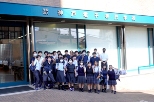

進路と卒業生
大学・専門学校見学ツアー
教室で学ぶ技術が、その先でどう発展するかを現地で確かめます。
2017年
大阪電気通信大学で合成・モーションキャプチャを体験し、神戸電子専門学校でキャラクターを動かすプログラムを作りました。
2019年
神戸電子専門学校でゲームプログラミングを、流通科学大学でオペレーションズ・リサーチを学びました。
2024・2026年
神戸学院大学、神戸電子専門学校、高知工科大学を訪問し、授業・施設・進路選びを具体的に考えました。



進路と卒業生
教室で学ぶ技術が、その先でどう発展するかを現地で確かめます。
大阪電気通信大学で合成・モーションキャプチャを体験し、神戸電子専門学校でキャラクターを動かすプログラムを作りました。
神戸電子専門学校でゲームプログラミングを、流通科学大学でオペレーションズ・リサーチを学びました。
神戸学院大学、神戸電子専門学校、高知工科大学を訪問し、授業・施設・進路選びを具体的に考えました。
